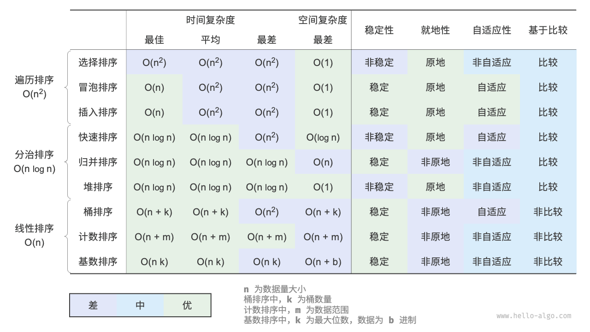

可以看到排序算法的评估角度有以下几种：
- 时间复杂度
- 空间复杂度
- 稳定性：
是否能排序后保持顺序 - 就地性：
是否能原地排序，不需要额外空间（一般来说等价于空间复杂度O(1)(特例：快排)） - 自适应性：
部分有序对效率是否有影响 - 基于比较：
是否通过比大小完成
遍历排序
遍历排序共有3种：
- 选择排序 Selection Sort
- 冒泡排序 Bubble Sort
- 插入排序 Insertion Sort
简述：
- 时间复杂度O(n2)，空间复杂度O(1)（即原地排序）
速度慢，不适用于大数据量情况 原地，空间上具有一定优势
- 稳定性：
- 有：冒泡 / 插入
- 无：选择
- 自适应性：
- 有：插入 > 冒泡
- 没有：选择
优秀程度：插入 > 冒泡 > 选择
- 由于选择排序既没有稳定性，同时也没有自适应性，是最差的一种
- 插入和冒泡都具有稳定性，而插入的自适应性会比冒泡好（插入是一个逐步有序的过程），所以插入是更好的选择
选择排序
优化：
- 如果找到的最小的就是第一个，那么不进行无意义交换
- 额外存储最小值，减少列表访问
- 双向选择：每轮寻找最小和最大，同时交换，减少一半次数
冒泡排序
优化：
- 如果某一轮没有交换，说明已完成排序，提前退出
- 记录最后交换位置，说明之后都有序，下轮不用扫到末尾
- 双向冒泡（鸡尾酒排序）
插入排序
while (j >= 0 && comparer.Compare(current, list[j]) < 0)while (j >= 0 && comparer.Compare(list[j], current) > 0)=，而不是a<b等价于b>=a
优化：
- 用shift替代swap
- 某轮如果不用交换，直接continue
- 不交换情况少了1次赋值，交换情况多了1次Compare
- 引用Compare通常更耗
- 偏有序情况也许能加
- 二分查找插入位置
- 优化了Compare次数（赋值次数没变）
- cache不友好，分支预测不友好
分治排序
分治排序共有4种：
- 希尔排序 Shell Sort
- 快速排序 Quick Sort
- 归并排序 Merge Sort
- 堆排序 Heap Sort
简述：
- 时间复杂度(nlogn)
- 希尔不完全是O(nlogn)
- 空间复杂度：
- 希尔(O(1)) = 堆(O(1)) > 快速(O(logn)) > 归并(O(n))
- 快速同样算是原地排序
- 稳定性：
- 有：归并
- 没有：希尔 / 快速 / 堆
- 自适应性：
- 有：希尔 / 快速
- 没有：归并 / 堆
优秀程度：快速排序 > 归并排序 ≈ 堆排序 > 希尔排序
- 整体都比遍历排序要快
- 需要速度：快速
- 需要稳定性：归并
- 需要自适应性：归并 / 堆
- 需要一定速度以及空间复杂度：堆（归并最差）
- 希尔的时间复杂度优化极其有限，非常不稳定，而且并没有到达O(nlogn)级别
希尔排序
本质：插入排序的优化版，优化局部逆序，从而减轻插入排序的时间
所以：希尔的时间复杂度完全取决于gap的选取
时间复杂度考虑：
外层gap循环需要O(logn)，插入排序需要O(n2)，但是前几次循环数量很少，相比最后一次gap=1可以忽略不记
第1轮（gap=n/2）：O(n)
第2轮：O(n)
第3轮：O(n log n)
...
最后一轮（gap=1）：O(n²)
优化：
- gap选取：
- 二分（
gap /= 2） - Knuth（
gap = gap * 3 + 1寻找，反向gap = (gap - 1) / 3排序） - Hibbard
- Sedgewick
- Tokuda
- 二分（
快速排序
优化：
- pivot选取
- 九数取中 > 三数取中 > 随机
- 分区策略
- Hoare：双指针 + 交换
- Lomuto：单指针 + 交换
- HoareLeftPivot：双指针 + 交换（pivot被提前换到左侧）
- Hole（Hoare变体）：双指针 + 覆盖
- ThreeWay 三路快排：
用于大量重复元素情况
- 较小区间递归，尾递归消除，栈空间优化至O(logn)
- Introsort
- 小区间改插入排序（比如<=16）
- 递归过深改堆排序
分区策略分析：
- 从好到坏：ThreeWay > Hole = Hoare > HoareLeftPivot = Lomuto
- HoareLeftPivot / Lomuto / Hole 更容易发生退化，时间复杂度会退化为O(n2)
- ThreeWay针对重复情况有优化
- Hole使用shift替代swap，性能更好
LeftPivot版本简化了与pivot相等数的交换，这是因为如果直接更改无法推进（全相等）导致死循环
两者本质上区别不大，只是一些条件的更改，但是Hoare更优秀：
归并排序
优化：
- temp数组只创建一个，每次Merge都复用（内部不用清理）
- 有序时不进行Merge
- 小区间改插入排序（比如<=16）
堆排序
优化：
SiftDown()减少交换次数- 先选更大的孩子，之后只比较一次
- 对比max和左右比较，路径更加固定，是一定向胜者孩子的走向
- 小区间改插入排序（比如<=16）
n / 2 - 12n + 1，如果超过末节点说明就是叶子节点，考虑n / 2的叶子节点得n + 1，超过，所以n / 2 - 1是最后一个非叶子节点
线性排序
线性排序有3种：
- 桶排序 Bucket Sort
- 计数排序 Counting Sort
- 基数排序 Radix Sort
简述一下的话：
- 桶排序核心就是将元素根据值的大小划分到不同的桶中，在桶中排序后合并
- 计数排序核心就是统计值出现的次数，根据其值以及次数放置到原数组
- 基数排序核心就是基于计数排序对每一位进行排序操作
考虑各个排序的限制：
- 桶排序---用于体量很大的数据，最好确定分布
- 计数排序---数值区间最好小，数据规模最好大，只能用于非负整数数组(可以转化也行)
- 基数排序---对于每一位来说同计数排序，除此以外，还必须可以表示为固定位数的格式(可以补0)且位数不能过大